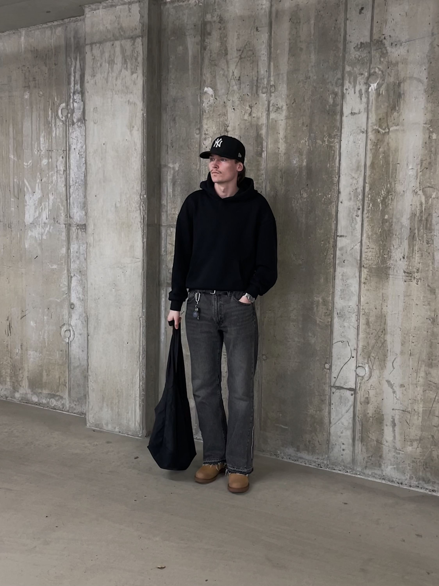

Tervetuloa sivulleni!
Täällä jaan harrastuksiani,
IT-alan työkokemustani ja muuta. Tämä on ensimmäinen
julkinen sivustoni ja CV:ni. Sivusto on tulossa suomeksi ja englanniksi,
jotta ulkomaiset yrityksetkin voivat oppia minusta.
Lisäksi löydät linkin omaan vaatemerkkiini kun se on valmis ja kooditutoriaaleja, jotka käsittävät omia ja tulevia taitojani.
Lisäksi löydät linkin omaan vaatemerkkiini kun se on valmis ja kooditutoriaaleja, jotka käsittävät omia ja tulevia taitojani.

Tietoa minusta
Olen 20-vuotias ensimmäisen vuoden opiskelija Haaga-heliassa. Opiskelen
tieto- ja viestintätekniikkaa, ja yritän valmistua sovellusarkkitehdiksi.
Tykkään urheilusta ja muodista. Käyn salilla ja haluaisin pelata vielä jalkapalloa mutta jouduin lopettamaan polvivamman takia.
Olen perustamassa omaa vaatemerkkiä ja yritän saada sen tänä vuonna valmiiksi.
Tykkään urheilusta ja muodista. Käyn salilla ja haluaisin pelata vielä jalkapalloa mutta jouduin lopettamaan polvivamman takia.
Olen perustamassa omaa vaatemerkkiä ja yritän saada sen tänä vuonna valmiiksi.